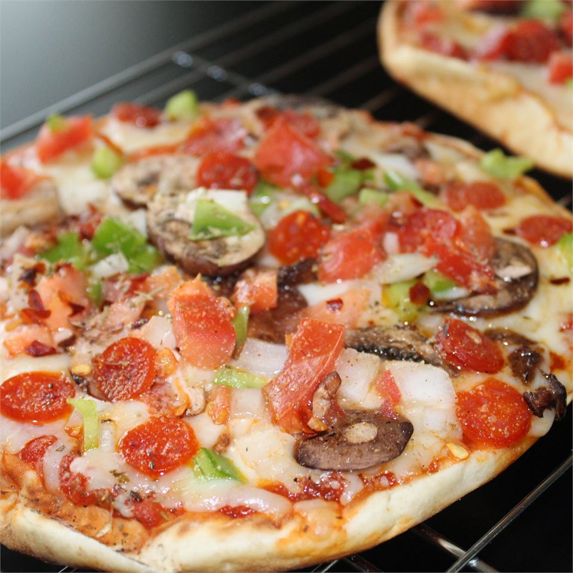

Veggie Pita Pizza Recipe

A Veggie Pita Pizza is a quick snack or meal that can be customized to your liking!
Ingredients
- 1 pita bread round
- 1 teaspoon olive oil
- 3 tablespoons pizza sauce
- ½ cup shredded mozzarella cheese
- ¼ cup sliced crimini mushrooms
- ⅛ teaspoon garlic salt
Steps
- Preheat grill for medium-high heat.
- Spread one side of the pita with olive oil and pizza sauce. Top with cheese and mushrooms, and season with garlic salt.
- Lightly oil grill grate. Place pita pizza on grill, cover, and cook until cheese completely melts, about 5 minutes.